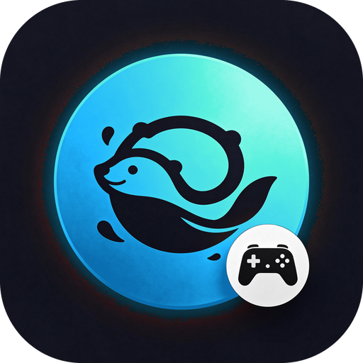
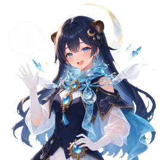
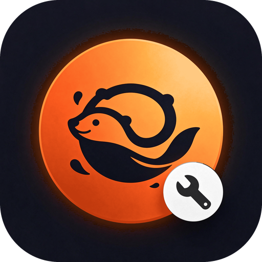
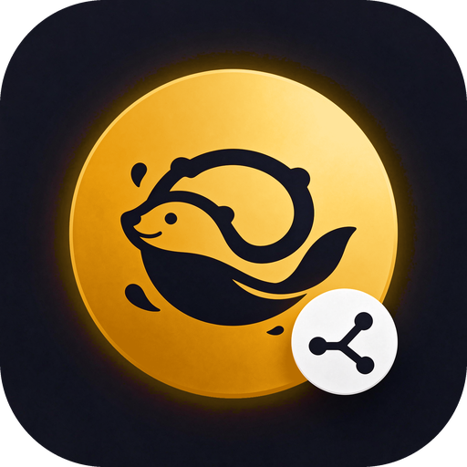

你从这里来水獭游时GameTime
时间花在哪里，是看得见的。
记下每一局游戏、每一个值得留下的瞬间。按住开战，小獭陪你看着时间；打完收工，把截图和心情收进藏品。
- 开战计时，接近上限时温柔提醒
- 藏品：截图、实况、一句话的回忆
- 50 个小獭表情，就是心情和标签
- 不需要账号，数据只存在这台手机
即将上架
水獭家族是一组安静、好看、不打扰的小软件，每一个只做好一件事。全部免费，不用注册，数据只在你自己的设备上。

看看家族成员图标是同一只蜷着睡觉的水獭，每个成员只换圆盘的颜色和右下角的徽章。

你从这里来时间花在哪里，是看得见的。
记下每一局游戏、每一个值得留下的瞬间。按住开战，小獭陪你看着时间；打完收工，把截图和心情收进藏品。

你从这里来
你从这里来不分会员，不设配额，也不会在界面里塞推广。
打开就能用。没有账号，也就没有需要你记住的密码。
记录、设置都存在你自己的设备上。AI 是可选的，用你自己的 Key，只在你点了才调用。
删除、清理、推送这类改不回来的事，小獭一定先弹确认。
同样的圆角、同样的五条动效曲线、同样的日夜两套主题，换一款也不用重新适应。
50 个表情，按场景和时间轮换。界面保持克制，情绪交给它。